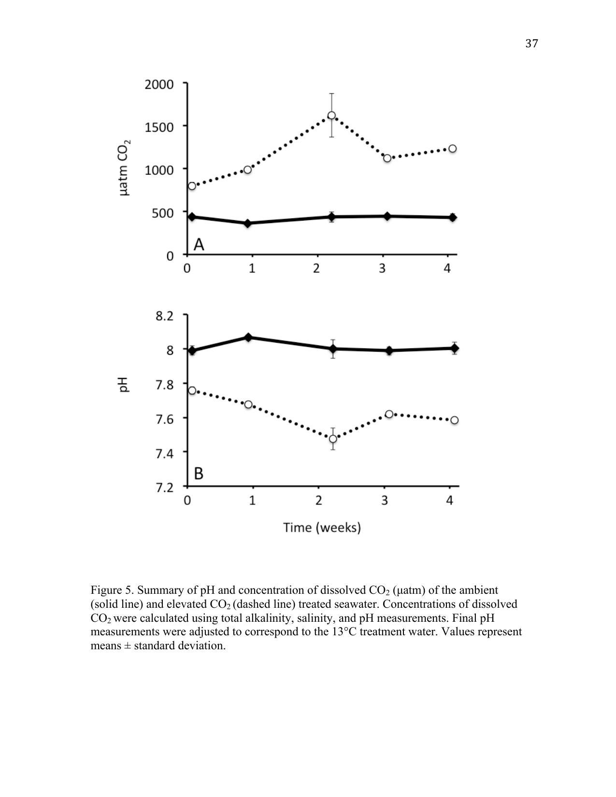
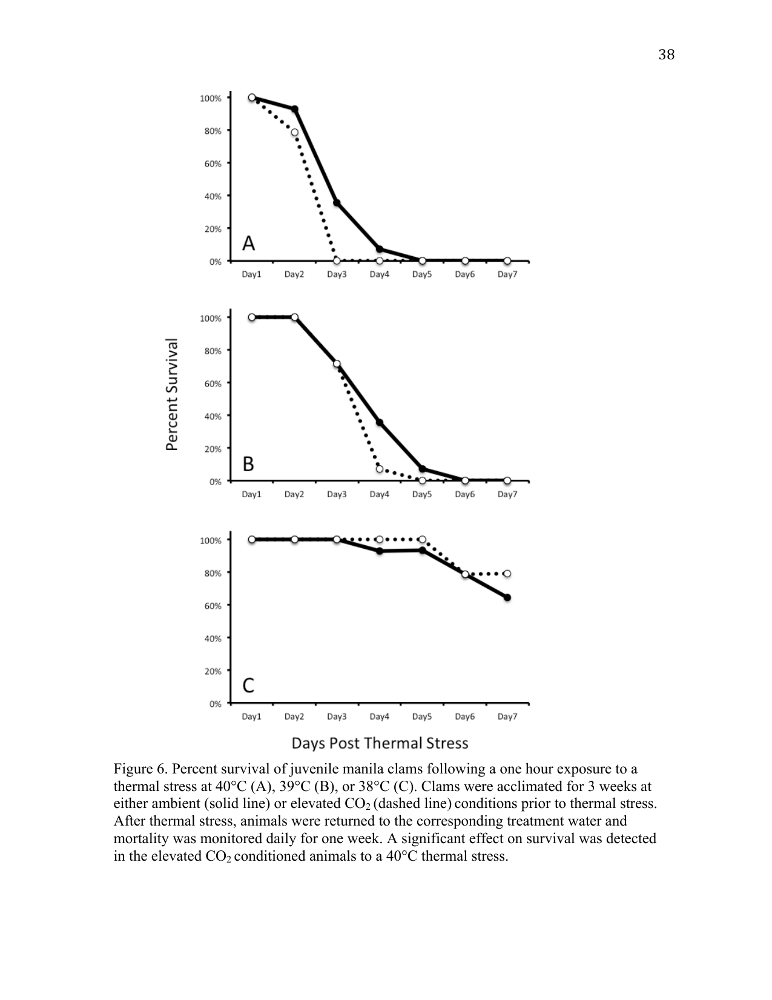
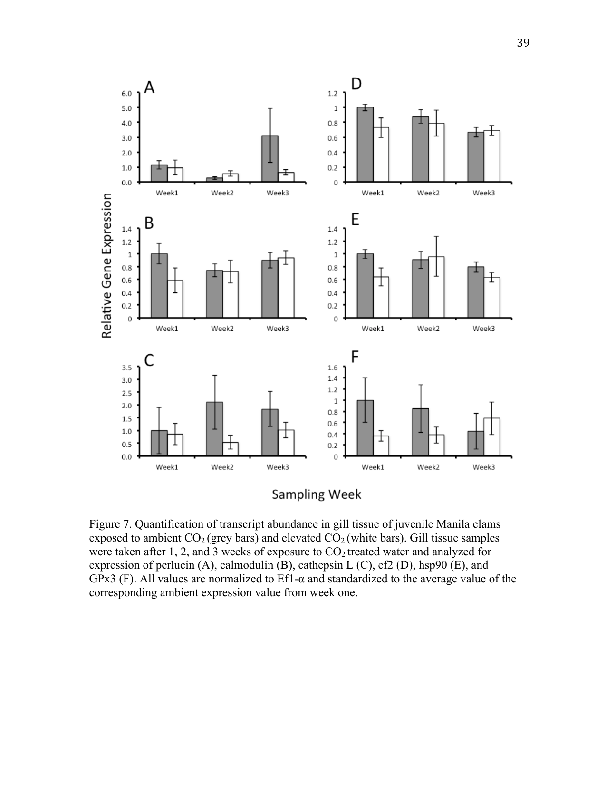

Effect of Elevated pCO2 Conditions on the Susceptibility of Juvenile Manila Clams to Thermal Stress
A short non-peer-reviewed scientific report
This report is a Roberts Lab working manuscript. It has not been peer reviewed.
It is shared to make small scientific efforts, preliminary analyses, technical observations, and exploratory work openly available.
This report is derived from Chapter II of David C. Metzger’s University of Washington Master of Science thesis (2012), Characterizing the effects of ocean acidification in larval and juvenile Manila clam, Ruditapes philippinarum, using a transcriptomic approach.
1 Background
Atmospheric carbon dioxide (CO2) levels have increased from 280 parts per million (ppm) prior to the industrial revolution to present-day levels of 400 ppm, higher than they have been in the past 800,000 years (Lüthi et al. 2008). While historic levels of atmospheric CO2 concentrations are known to fluctuate (Tyrrell 2008), the current rate at which CO2 levels are increasing is unprecedented (Caldeira and Wickett 2003) at 0.5% per year (Orr et al. 2005). Increasing atmospheric levels of CO2 are expected to increase global temperatures by 2 to 5 °C (Houghton et al. 2001) and impact the carbonate chemistry of seawater (Feely et al. 2004, 2008).
Oceans have absorbed roughly one third of the anthropogenic CO2 emissions (Sabine et al. 2004). When carbon dioxide from the atmosphere mixes in the oceans, it reacts with carbonate ions and water to form hydrogen and bicarbonate ions (Feely et al. 2004; Orr et al. 2005). By converting carbonate to bicarbonate, CO2 dissolution decreases the saturation state of calcium carbonate minerals such as aragonite and calcite, and increases the concentration of free hydrogen ions, causing the water to become more acidic (Zeebe and Wolf-Gladrow 2001). By decreasing the saturation state of calcium carbonate, fewer calcium carbonate molecules are available for calcifying organisms to form shells. If the current rate of fossil fuel emissions persists, atmospheric levels of CO2 will reach 750–1000 ppm by 2100, corresponding to a pH decrease of 0.3–0.5 units in the oceans, a process known as ocean acidification (IPCC 2007; Zeebe and Wolf-Gladrow 2001; Caldeira and Wickett 2005).
Elevated pCO2 conditions can be found along coastal waters due to processes such as upwelling. Upwelling causes a shoaling of CO2-enriched and carbonate-deficient waters closer to coastal surface waters. While the source of CO2 in these corrosive waters is largely due to natural processes such as respiration and decomposition of organic matter, surface waters enriched with anthropogenic CO2 from the atmosphere exacerbate shoaling of carbonate-deficient waters. Consequently, recent observations in upwelling zones, such as those along the California coast, have recorded pCO2 levels in surface waters exceeding levels not predicted to occur until 2050 (Feely et al. 2008). It takes approximately 50 years for water to cycle from the surface through deeper ocean currents and back to the surface again, suggesting that future upwelling events will contain higher levels of anthropogenically enriched CO2 (Feely et al. 2008). Upwelling events are caused by strong northerly winds along the eastern Pacific and Atlantic oceans that facilitate Ekman transport of surface waters away from the coasts, allowing carbonate-deficient ocean waters to rise to the surface. These winds are predicted to increase as a result of global warming, further increasing the intensity of upwelling events (Bakun 1990; Lachkar and Gruber 2012). Populations that inhabit these coastal waters are thought to be at risk from ocean acidification, particularly those dependent on calcium carbonate structures for stability, defense, and survival (Fabry et al. 2008; Cooley and Doney 2009). For example, recent studies at shellfish hatcheries have correlated upwelling with increased larval oyster mortalities (Elston et al. 2008; Barton et al. 2012).
Temperature fluctuations associated with increased CO2 emissions are also predicted to have a greater impact on coastal communities, as these shallower waters equilibrate more readily to changes in atmospheric temperature (Levitus et al. 2000; Nixon et al. 2004). Concurrent changes in temperature and carbonate chemistry can have additive, synergistic, or antagonistic effects on physiological processes (Folt et al. 1999; Darling and Cote 2008; Hofmann and Todgham 2010). Depending on the species and developmental period, the mechanism of combined stressors can vary (Pörtner 2008). For example, antagonistic effects of combined thermal and elevated pCO2 conditions were observed in the tropical sea urchin Tripneustes gratilla, where elevated pCO2 conditions reduced calcification and nullified the positive growth impact of warmer temperatures (Brennand et al. 2010). Combined high pCO2 and thermal treatments increased mortality of larval red abalone, Haliotis rufescens, compared to either treatment alone (Zippay and Hofmann 2010). A multispecies study among bivalves showed a variable effect of elevated pCO2 and warmer temperatures on growth and survival of larval and juvenile eastern oysters, Crassostrea virginica, hard clams Mercenaria mercenaria, and bay scallops Argopecten irradians (Talmage and Gobler 2011). Variability among species may be due, in part, to differences in life history (Talmage and Gobler 2011). Intertidal and shallow subtidal species may already be functioning close to their physiological limits and thus may be more susceptible to changing environmental conditions as a result of climate change (Tomanek 2008; Somero 2010; Peck et al. 2009, 2010; Christensen et al. 2011). Alternatively, organisms inhabiting these ecosystems may be more adapted to harsh conditions. Detecting a shift in physiological limitations, particularly in thermal tolerance, induced by elevated pCO2 levels, will provide insight into an organism’s ability to cope with changing conditions and potential changes to the ecological landscape of coastal communities.
The Manila clam, Ruditapes philippinarum, is an economically and ecologically important species (Dumbauld et al. 2009). Manila clams are indigenous to the Philippines, South China and East China Seas, and up to the Sea of Okhotsk and the southern Kuril Islands (Scarlato 1981). Since being accidentally introduced to the west coast of the United States in the 1930s (Magoon and Vining 1981), they have become an economically important aquaculture species (Dumbauld et al. 2009). Manila clams are tolerant of a wide range of temperatures and salinities (Numaguchi 1998), however, little is known concerning their tolerance to ocean acidification (López et al. 2010; Metzger and Roberts 2012).
The objective of this study was to examine the impact of elevated pCO2 on juvenile Manila clam physiology. Transcription of candidate genes involved in calcification, translation, stress response, and oxidative stress are measured during the acclimation period of juvenile clams to elevated pCO2 conditions. In addition, the lethal temperature (LT) for juvenile Manila clams was determined and the effect of elevated pCO2 conditions on juvenile Manila clam thermal limits was assessed. If ocean acidification alters physiological processes necessary for Manila clams to cope with thermal fluctuations, an increase in mortalities would be expected at lower temperatures compared to ambient pCO2 conditions. However, if clams were able to cope with ocean acidification using mechanisms not associated with thermal stress response, increased susceptibility to lower temperatures would not be observed.
2 Methods
2.1 Experimental design
Juvenile Manila clams (mean ± SD; length = 13.9 mm ± 2.1; width = 18.3 mm ± 2.7; wet weight = 1.45 g ± 0.6) were obtained from the Taylor Shellfish hatchery in Quilcene, WA, and transported to the ocean acidification facility at the University of Washington Friday Harbor Laboratories. Clams were exposed to seawater equilibrated to ambient (400 µatm; pH 8.03) or elevated (1000 µatm; pH 7.67) pCO2 levels. Gas equilibration was achieved by stripping seawater of CO2 using a membrane contactor under vacuum pressure. Pure CO2 gas was then mixed with CO2-free air using gas proportionators. The prepared gas mixtures were then equilibrated with seawater using solenoid valves attached to Venturi injectors. Dissolved CO2 was monitored by measuring pH using a Honeywell controller connected to a Durafet pH probe adjusted to maintain the desired pH. Total alkalinity measurements were performed prior to the addition of animals to the system and once per week following the addition of animals. Additionally, spectrophotometric pH samples were taken daily. Carbonate chemistry measurements, including partial pressure CO2 as well as aragonite and calcite saturation, were calculated from alkalinity, spectrophotometric pH, and salinity using the CO2 calculator “CO2Calc” (Robbins et al. 2010) with the following parameters: physical data parameters °C = 25, adjusted conditions °C = 13, CO2 constants: Lueker et al. (2000), KHSO4: Dickson (1990), pH scale: total scale (mol/kgSW), air-sea flux: Wanninkhof (1992).
Each experimental treatment contained 8 replicate 3 L chambers maintained at a constant temperature of 13 °C and a flow rate of 1.9 L/hr. Each chamber contained 10 clams for a total starting number of 80 juvenile clams for each treatment. At the end of each week, one clam from each chamber was sacrificed and gill tissue dissected and flash frozen. A total of eight clams were sampled from each pCO2 treatment each week, leaving a total of 56 clams at the end of the three-week sampling period. After the three weeks the remaining clams were exposed to a temperature stress.
Clams were transferred to a temperature-equilibrated treatment water bath and exposed for one hour at one of the following temperatures: 38, 39, or 40 °C. During thermal treatments, clams were completely submerged in their designated pCO2 treatment seawater. Clams were then returned to 13 °C at their respective pCO2 treatment conditions and mortality was monitored for one week. A total of 14 clams (two replicate groups of seven animals) were used for each pCO2 and temperature combination. Mortality was assessed based on gaping behavior; clams that failed to close their shells in response to mechanical stimulation were considered moribund.
2.2 RNA extraction and cDNA synthesis
RNA was extracted from gill tissue using TriReagent (Molecular Research Center, Cincinnati, OH, USA) following the manufacturer’s recommended protocol. Total RNA was DNase treated (DNA Free kit; Ambion, Austin, TX, USA) following the manufacturer’s rigorous protocol to remove potential DNA carryover from RNA extractions. Purified RNA was quantified using a Nanodrop ND-1000 UV-Vis spectrophotometer (NanoDrop Technologies Inc., Rockland, DE). Reverse transcription reactions were conducted using M-MLV reverse transcriptase (Promega, Madison, Wisconsin) and 0.5 µg of total RNA to generate complementary DNA (cDNA).
2.3 Quantitative PCR analysis
Primers for quantitative PCR (qPCR) analysis were generated using Primer3 software (Rozen and Skaletsky 2000) from sequences provided in the Manila clam transcriptome database (RuphiBase, http://compgen.bio.unipd.it/ruphibase). Primer sequences are provided in Table 1. All primers were ordered from IDT (Coralville, IA, USA). Quantitative PCR reactions were carried out in 20 µL reaction volumes consisting of 1× Ssofast EvaGreen Supermix (Bio-Rad, Hercules, CA), 0.2 µM of each primer, and 2 µL of diluted (1:5) cDNA. Amplification reactions were carried out using a CFX96 Real-Time PCR Detection System (Bio-Rad, Hercules, CA) with the following cycling parameters: 98 °C 2 min, followed by 40 cycles of 98 °C for 2 sec, 60 °C for 5 sec. Melt curve analysis was performed after cycle 40 by increasing the annealing temperature from 65 °C to 95 °C in 0.2 °C increments and measuring fluorescence at each increment. All samples were run in duplicate. Efficiencies of qPCR reactions were calculated using PCR Miner software (Zhao and Fernald 2005). Expression values were calculated using the following equation: 1/(1+Efficiency)Ct. Calculated expression values were then normalized to elongation factor-1 alpha (ef-1α). Ef-1α is a commonly used normalizing gene and has previously been used as a reference gene in CO2 manipulation (O’Donnell et al. 2009). The stability of ef-1α was confirmed by a two-way ANOVA analysis, which showed no significant difference in ef-1α between ambient and elevated CO2 treatments.
2.4 Statistical analysis
Prior to statistical analysis, normalized expression values (NEV) were transformed by taking the natural log of one plus the normalized expression value [ln(NEV+1)]. Two outliers were identified in the expression data from week 1 and week 2 in the elevated CO2 treatment for all qPCR assays and were omitted from further analysis, resulting in an n = 7 for the indicated sampling groups. A two-way ANOVA was conducted on the transformed expression data to test for significant effects of treatment and time. A Kaplan-Meier survivorship analysis was applied to survival data from the thermal stress trial and significance was determined using a log-rank test. Significance was determined based on p < 0.05. All statistical analysis was conducted using SPSS statistical software (IBM, Somers, NY).
3 Results/Discussion
3.1 Elevated pCO2 treatment
Partial pressure CO2 conditions were maintained at two different levels for the duration of the experiment (Figure 1). Conditions representing present-day (ambient) pCO2 concentrations were maintained at 424 ± 45 µatm corresponding to a pH of 8.01 ± 0.04. Elevated levels of pCO2 were maintained at 1146 ± 312 µatm corresponding to a pH of 7.63 ± 0.10 (Figure 1), which are within the projected changes expected to occur by 2100 (Caldeira and Wickett 2003). The greatest amount of variability was observed in samples taken during week 2, in which a spike in pCO2 was observed in the elevated treatment (Figure 1). No mortalities occurred as a result of the different CO2 treatment conditions. A summary of results from the carbonate chemistry sampling is provided in Table 2.

3.2 Thermal tolerance
Juvenile Manila clams held in ambient or elevated pCO2 seawater for three weeks were heat shocked at the pre-determined lethal temperature (40 °C) and at one and two degrees lower than the lethal temperature (39 °C and 38 °C) to assess any influence of elevated pCO2 conditions on thermal tolerance (Figure 2). A greater number of clams survived the 40 °C heat shock from the ambient pCO2 relative to the elevated pCO2 treatment (p < 0.05). The onset of mortality (OM) occurred on day 2 in both the ambient and elevated CO2 treatments. The mean day of death (MDD) for animals heat shocked at 40 °C shifted from 3.4 days at ambient pCO2 to 2.8 days post treatment (DPT) at elevated pCO2 conditions.
No differences in survival, OM, or MDD were observed at 39 °C or 38 °C heat shock (p > 0.05). The OM in animals heat shocked at 39 °C occurred on day 3 in both the ambient and elevated pCO2 treatments, with a mean day of death for animals exposed to 39 °C of 4.1 DPT for animals treated with ambient pCO2 seawater while the elevated pCO2 treatment was slightly lower at 3.8 DPT. The OM at 38 °C occurred on day 4 in both the ambient and elevated pCO2 treatments. The MDD for animals heat shocked at 38 °C was 6.6 and 6.7 for ambient and elevated pCO2 treated animals respectively, with 64.3% surviving until day 7 in the ambient pCO2 group and 71.4% surviving in the elevated pCO2 treatment.

An organism’s survival and fitness capacity depend on their physiological plasticity to cope with changing environments (Hofmann and Todgham 2010). Plasticity is associated with the allocation of energetic resources to physiological processes required for maintaining vital cellular functions (Findlay et al. 2009). Understanding how a particular stressor impacts this energetic balance provides valuable insight into the potential mechanisms of coping with changing environmental conditions. Events associated with global climate change, such as ocean acidification and increasing sea surface temperatures, will occur in concert with other naturally occurring environmental stressors. The objective of the thermal stress study was to determine whether elevated pCO2 has an effect on juvenile Manila clam thermal tolerance. Similar studies in other organisms have observed synergistic effects on stress response mechanisms (Liu et al. 2012; Zippay and Hofmann 2010; Chapman et al. 2011; Metzger et al. 2007), and in some, increased mortality (Zippay and Hofmann 2010). Elevated pCO2 alone did not increase mortality of juvenile Manila clams compared to ambient pCO2 conditions; however, the combination of elevated pCO2 and thermal stress resulted in a shift in the juvenile Manila clam thermal tolerance window, as seen in the 40 °C trial. The effect of elevated pCO2 was not severe enough to shift LT a degree below 40 °C. This suggests that the thermal tolerance of juvenile Manila clams is not significantly affected by near-future levels of atmospheric CO2. However, increased sensitivity to a 40 °C thermal stress suggests that the physiological mechanisms necessary to cope with thermal stress are impacted by elevated pCO2 conditions.
3.3 Gene expression analysis
Transcriptomic processes can moderate an organism’s physiological plasticity in response to changing environmental conditions (Hofmann and Todgham 2010). Previous studies that have examined molecular and cellular impacts of elevated pCO2 have identified several vital physiological processes that are susceptible to changing pCO2 conditions, including protein synthesis and metabolism, calcification, oxidative stress, and ion homeostasis (Metzger and Roberts 2012; Moya et al. 2012; Todgham and Hofmann 2009; O’Donnell et al. 2010). Candidate genes for the current study were selected from a previous study of Manila clam larvae in which RNA-Seq was employed to characterize the entire transcriptome of larvae exposed to elevated pCO2 conditions (Metzger and Roberts 2012).
One of the most commonly studied processes in organisms facing elevated pCO2 conditions is calcification. Most reports to date have documented a negative effect of IPCC-projected CO2 conditions on calcifying organisms (Kroeker et al. 2010; Gazeau et al. 2007; Orr et al. 2005). The gene encoding Perlucin 6 was recently identified in larval Manila clams (Metzger and Roberts 2012). Perlucin is a C-type lectin (Mann et al. 2000) that has been shown to nucleate calcium carbonate ions (Weiss et al. 2000; Blank et al. 2003). In vitro studies have shown that Perlucin is incorporated into the calcium carbonate structure (Blank et al. 2003). Perlucin may therefore be an important component of calcification in Manila clams.
Perlucin-6 gene expression levels were not significantly different in juvenile clams exposed to elevated pCO2 (Figure 3 A). This result may not be surprising, as mantle tissue is primarily responsible for laying down new shell. This study was designed to measure transcriptional changes in gill tissue, as this represents the primary interface for gas and ion exchange with the environment.
Calmodulin is a Ca2+-dependent messenger protein that moderates the activity of enzymes involved in several vital cellular processes including ATPase-driven ion pumps (Klee et al. 1980) necessary for maintaining ion homeostasis, particularly in gill tissue. Transcriptomic analysis in corals noted decreases in calmodulin transcripts in elevated CO2 conditions (Kaniewska et al. 2012). We expected to see changes in calmodulin transcript levels if clams were regulating the activity of ATPase-driven ion channels and Ca2+ transport. However, an effect of elevated pCO2 on calmodulin transcripts was not detected (Figure 3 B).
Protein synthesis and degradation can be indicative of an organism’s general physiological and metabolic status. The cathepsin family of proteins is involved in mediating protein synthesis and degradation. Increased activity of cathepsin L has been associated with proteolysis as an alternative source of energy during periods of increased metabolic demand (Hawkins and Day 1996). Elevated pCO2 conditions did not influence cathepsin L transcription (Figure 3 C), suggesting that juvenile Manila clams are not experiencing metabolic stress under elevated pCO2 conditions. In addition, there was no significant effect of elevated pCO2 on elongation factor 2 (EF2) transcript levels between ambient and elevated pCO2 conditions (Figure 3 D). EF2 is involved in peptide elongation during protein synthesis. Previous studies have identified changes in protein concentration of larval barnacles (Wong et al. 2011) and transcripts in larval Manila clams (Metzger and Roberts 2012), suggesting that ef2 can play a role in moderating the physiological plasticity of organisms exposed to elevated pCO2.
Also involved in protein metabolism, as well as thermal stress, immune response, and apoptosis (Feder and Hofmann 1999; Roberts et al. 2010), are the heat shock protein (hsp) family. Named for their molecular mass (e.g. hsp60, hsp70, hsp90), heat shock proteins are molecular chaperones that bind and stabilize proteins, aiding in protein synthesis or the repair of damaged proteins from processes such as oxidative stress. Analysis of hsp90 expression in gill tissue of juvenile clams exposed to elevated pCO2 conditions was not significantly different from those compared to ambient pCO2 conditions (Figure 3 E). It is possible that hsp90 is not required to cope with this particular stress response, or that regulation of hsp90 does not occur at the transcriptional level. Hsp90 is a ubiquitously expressed protein that undergoes an ATPase-dependent conformational change upon activation (Pearl and Prodromou 2006). Conditioning of the hsp stress response has been shown for several environmental conditions (Bierkens 2000), which may be the case here. Interestingly, expression of hsp90 has also been shown to decrease with age in the hard clam Mercenaria mercenaria (Farcy et al. 2007). Age-dependent regulation of hsp90 might suggest that it is more highly expressed during early larval periods, while juveniles and adults do not actively express hsp90 to the same degree.
Elevated pCO2 conditions can also invoke an oxidative stress response, possibly as the result of intracellular acidosis and the generation of reactive oxygen species (ROS) (Tomanek 2011). A study in the eastern oyster Crassostrea virginica revealed antioxidant defense as a primary response of oysters exposed to elevated pCO2 conditions (Tomanek 2011). Glutathione peroxidase 3 (GPx3) is selenium dependent and is highly expressed in gill tissue (Wong et al. 2011). Increased levels of GPx3 are typically associated with response to increases in ROS and oxidative stress (Wong et al. 2011). In this study, elevated pCO2 conditions did not significantly affect the expression of GPx3 transcripts (Figure 3 F), indicating that juvenile Manila clams may not be experiencing increased levels of oxidative stress as a result of elevated pCO2 conditions. Glutathione peroxidases can also play a role in the immune response by protecting tissues from the ROS that are secreted as a defense mechanism. This experiment was not designed to assess the immunocompetency of juvenile clams under elevated pCO2 conditions; however, these results suggest that the ability of juvenile Manila clams to cope with ROS secretion by their immune system may be unaffected by elevated pCO2 conditions. Directed studies involving immune challenge with a pathogen under elevated pCO2 are required to assess immunological effects of elevated pCO2 before any conclusions can be made.

4 Conclusion
Preliminary results to assess the minimum lethal temperature for juvenile Manila clams determined that 40 °C was the minimum lethal temperature that resulted in 100% mortality one week post-exposure (data not shown). Mortality of juvenile Manila clams exposed to 40 °C was significantly affected by elevated pCO2 conditions (Figure 2 A). This increased sensitivity, however, did not translate to an increased sensitivity at lower temperatures (Figure 2 B, C). While not significantly different, the OM and MDD of clams exposed to elevated pCO2 was later than that of ambient clams (Figure 2). In addition, the expression of several genes associated with processes such as calcium ion binding, metabolism, translation, and stress response were not significantly different in juvenile clams exposed to elevated pCO2. Together, these data suggest juvenile clams are capable of effectively coping with elevated pCO2 conditions, possibly as a result of local adaptation to low-alkalinity coastal waters (Hofmann and Todgham 2010). Future experiments examining prolonged exposures of elevated pCO2 on different populations of Manila clams are needed to determine whether projected environmental conditions as a result of climate change are within the physiological limits of the Manila clam. In addition, it would be of interest to examine the impact of larval exposure to elevated pCO2 on physiological processes and gene expression in juvenile and adult animals.
5 Tables
| Gene target | Oligo | RuphiBase ID | Primer DNA sequence (5’→3’) |
|---|---|---|---|
| Ef-1α | Fwd | ruditapes2_c4569 | ACGCTCCACTTGGACGTTTTGCT |
| Ef-1α | Rev | TGTAGCCTTTTGGGCAGCTTTGGT | |
| Hsp90 | Fwd | ruditapes_c1528 | TCTCCCTTGAAGAGCCAACAACCCA |
| Hsp90 | Rev | TCATCATCACCTTCCAATGGGGGCA | |
| Cathepsin | Fwd | ruditapes_lrc32628 | AGCCAAAGAACGGCCGATGTGA |
| Cathepsin | Rev | TCCTACTGTTGCTACAGCGGCTTG | |
| Calmodulin | Fwd | ruditapes_c670 | ACGACCAAGTGGACGAGATGTTGC |
| Calmodulin | Rev | AGTACAGGCACTGGATGGTGCGTA | |
| GPx3 | Fwd | ruditapes2_c3709 | ATTCTCGAGCGCTGGGGTAAAAGTG |
| GPx3 | Rev | TAGTTGTCGGCCGGCTCTTGCATT | |
| Perlucin | Fwd | ruditapes_lrc29501 | GCAGACGTCGACAGGATGTCCAAT |
| Perlucin | Rev | ACAGTATGCCATAGCCTCCCACCA | |
| EF2 | Fwd | ruditapes2_c46 | GACAGTGTTGTTGCTGGCTTCCAGT |
| EF2 | Rev | TGTCCACCACCTCTGTGGATAGCA |
| Treatment | TA (µmol/kg) | Salinity | pH | pCO2 (µatm) | ΩCa | ΩAr |
|---|---|---|---|---|---|---|
| Ambient | 2078.49 ± 13.71 | 29.79 ± 0.25 | 8.01 ± 0.04 | 424.11 ± 44.90 | 2.71 ± 0.24 | 1.71 ± 0.16 |
| Elevated | 2085.14 ± 13.37 | 29.92 ± 0.21 | 7.63 ± 0.10 | 1146.11 ± 312.42 | 1.24 ± 0.26 | 0.78 ± 0.17 |
6 Suggested citation
Metzger, D. C., and S. B. Roberts. 2012. Effect of elevated pCO2 conditions on the susceptibility of juvenile Manila clams to thermal stress. Current Findings. Available at: https://robertslab.github.io/current-findings/reports/manila-clam-juvenile-pco2-thermal-stress/
7 Version history
| Version | Date | Notes |
|---|---|---|
| 0.1 | 2026-06-17 | Migrated from Metzger_washington_0250O_10509.pdf (Chapter II) |